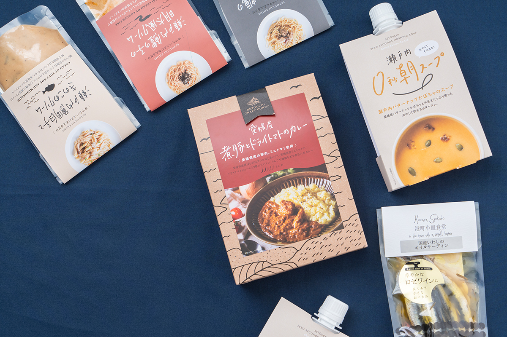
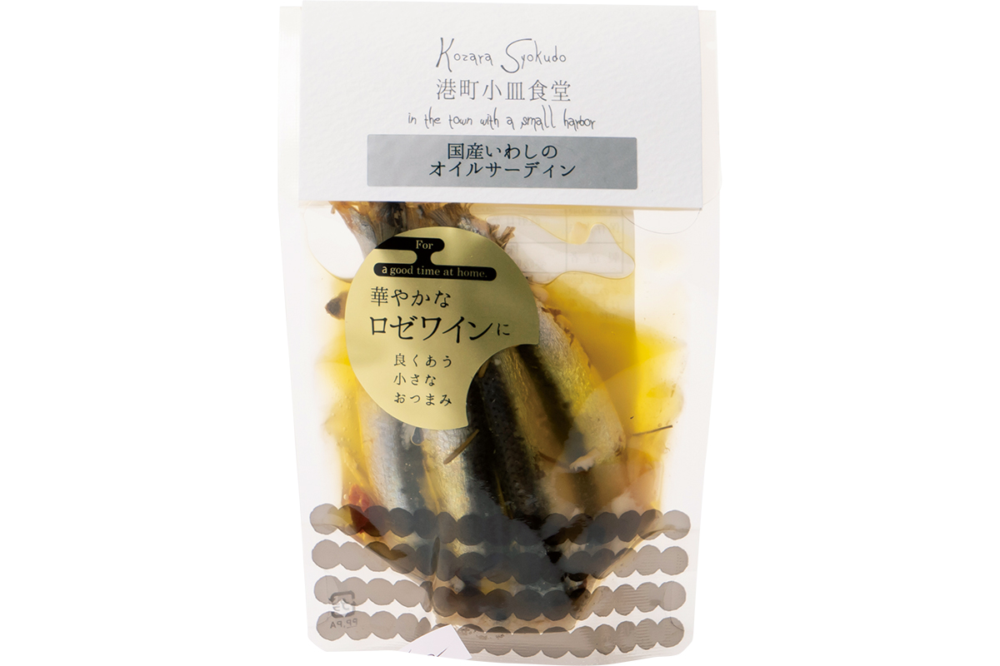
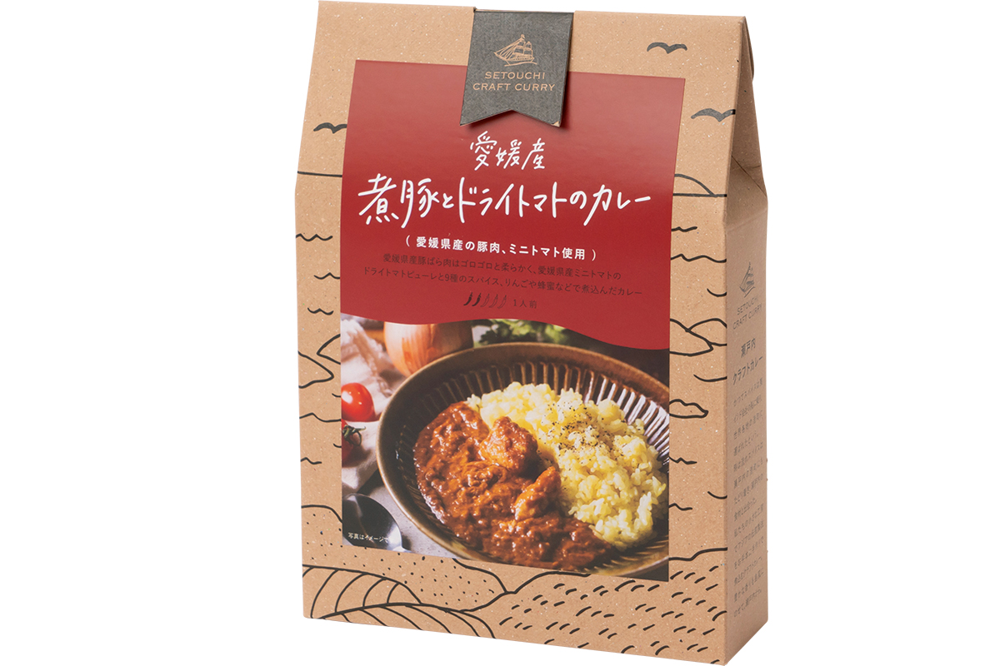
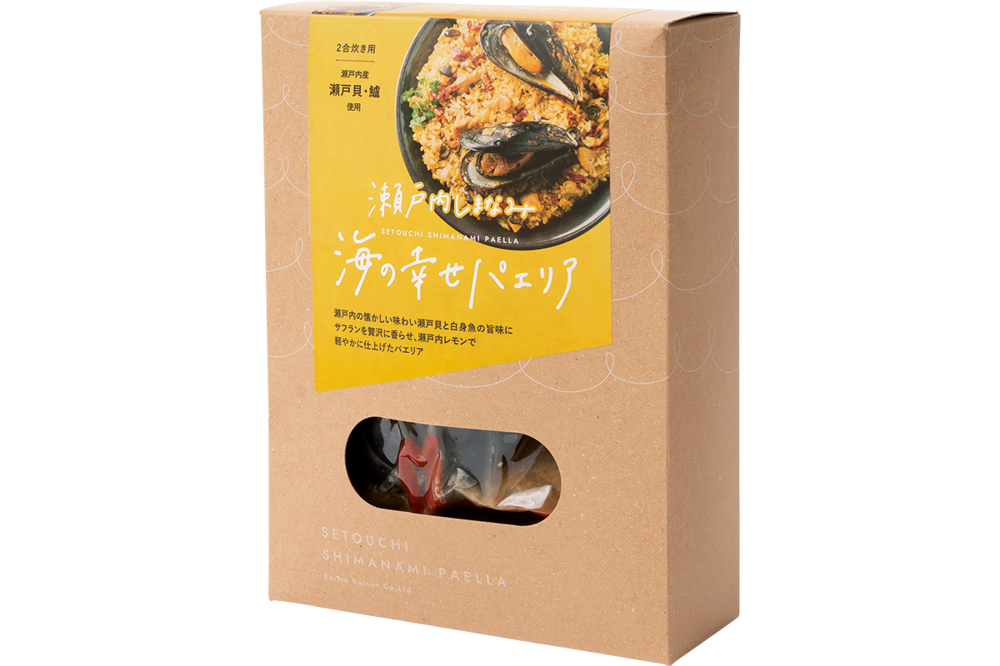

Префектура Эхимэ · Имабари · еда
«Эхимэ-кайсан» из Имабари: дары Внутреннего моря в банке и реторт-пакете
В портовом Имабари, у самого пролива Курусима, из местной рыбы делают закуски и готовые блюда: иваси в оливковом масле, карри с томатами и паэлью с дарами моря. Всё это легко привезти домой.
Компания
Рыба из пролива Курусима
«Эхимэ-кайсан» основана в 1979 году в Имабари. Пролив Курусима у берегов города богат рыбой, и компания начинала с сушёной рыбы, в том числе местного морского леща. Со временем здесь перешли к готовым блюдам: так местную рыбу стало проще попробовать и в больших городах.

В маленьком цеху работают с рыбой особенно аккуратно: сырьё берут свежим и стараются обработать в тот же день, поэтому вкус остаётся ярким. К рыбе добавляют местные мясо и овощи, а масло и специи придают блюдам характер Средиземноморья.
Продукты
Что стоит попробовать
«Иваси в оливковом масле»
Иваси чистят по одной и долго томят в оливковом масле. Чеснок и рыбный вкус переходят в масло, и его тоже стоит подать к хлебу.

«Карри со свининой и сушёными томатами»
Для этого карри делают пюре из мелких томатов с острова Омисима, который называют островом богов. Свинину из Эхимэ тушат до мягкости и приправляют девятью специями.

«Паэлья с дарами моря»
Главные герои паэльи это ракушки сэтогай и сузуки из Внутреннего моря. Сначала раскрываются вкус ракушек и белой рыбы, а следом приходит лёгкая свежесть лимона из Сэтоути.

Паэлью достаточно разогреть в микроволновке или на сковороде, и на стол попадает улов пролива Курусима, даже если до моря далеко.
Эхимэ-кайсан
- Адрес
- префектура Эхимэ, Имабари, Тэмподзан, 5-2-2
- Телефон
- +81 898-24-1154